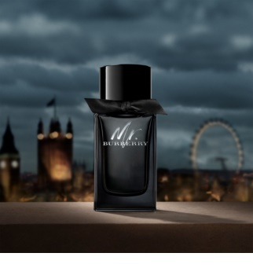

| Note de varf | MENTA, TARHON,GRAPEFRUIT, CARDAMOM |
| Note de inima | CEDRU, NUCSOARA, LAVANDA |
| Note de baza | SCORTISOARA,BENZOIN, CIHILIMBAR, PATCHOULI, LEMN DE SANTAL, VETIVER |
| Grupe de parfumuri | PICANTE, LEMNOASE |
Bărbatul Burberry este plin de contraste. Respectă tradițiile, dar ține pasul cu timpurile moderne. Este distins, dar și senzual. Elegant, dar și rebel, la fel ca metropola britanică care a inspirat parfumul bărbătesc Burberry Mr. Burberry, lansat în 2017. Gâtul flaconului este decorat cu o panglică neagră de gabardină, din care este cusut și legendarul trenci emblematic al brandului.
